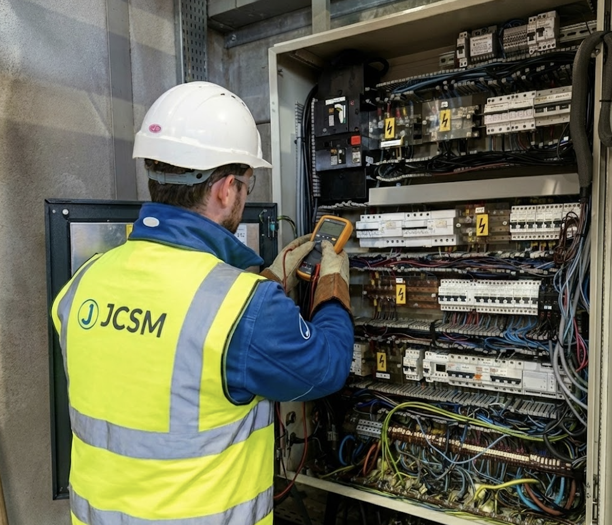
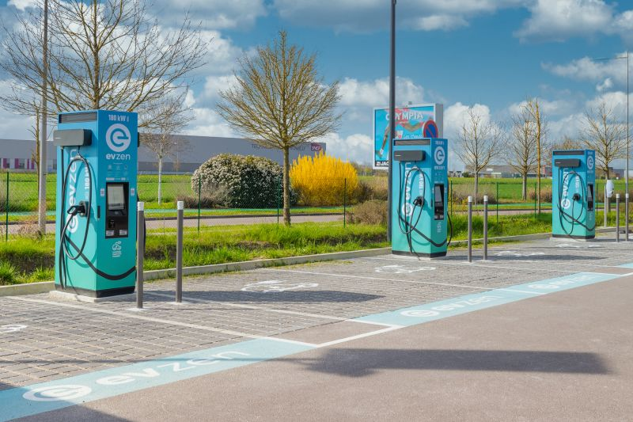
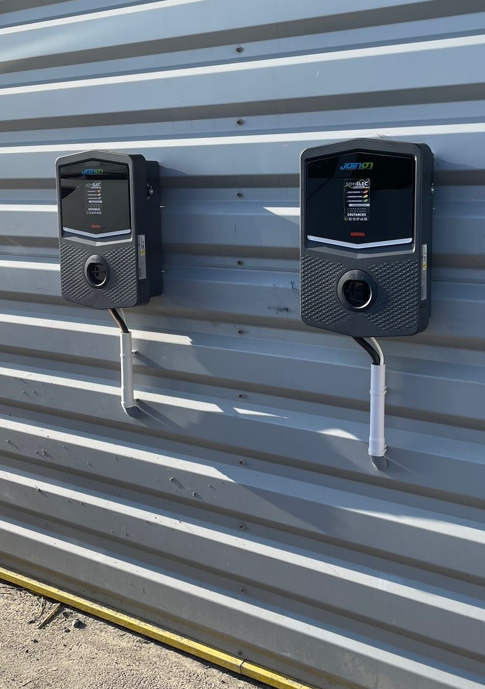
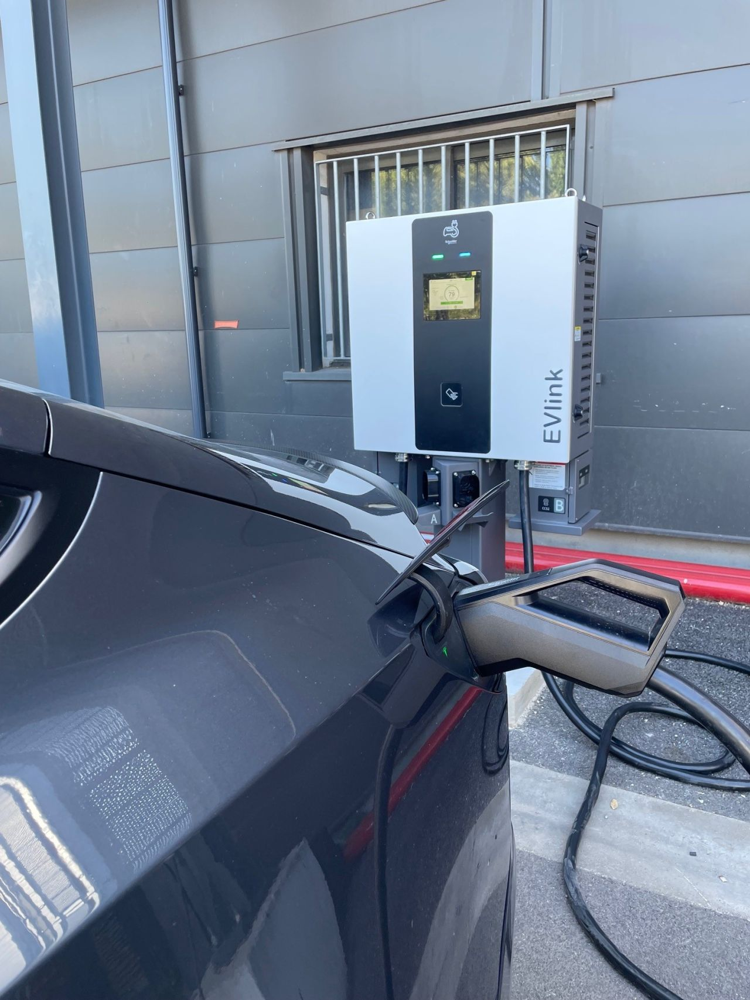
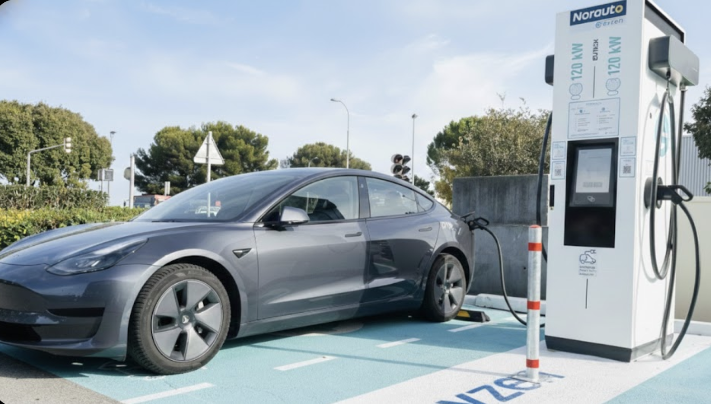
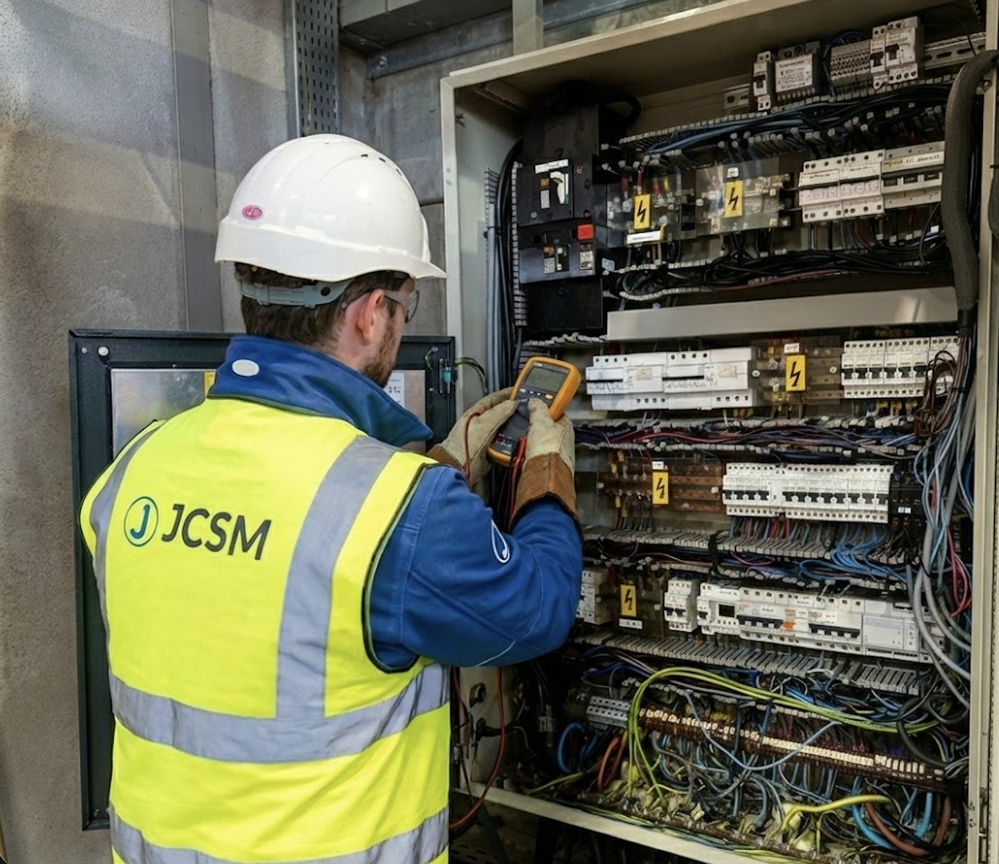
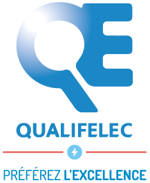

Certyfikowana ekspertyza dla Twoich stacji ladowania
Wysoko wydajna instalacja i przywrocenie zgodnosci Twojej infrastruktury ladowania. Niezawodnosc gwarantowana zgodnie z normami NF C 15-100 i UTE C15-722.

Profesjonalisci i firmy
Parkingi, stacje ladowania, floty firmowe, wspolnoty mieszkaniowe: wdrazamy infrastrukture IRVE pod klucz, od analizy technicznej po uruchomienie.




Nowa instalacja
Montaz stacji ladowania zgodnych z normami, okablowanie i przylacza elektryczne certyfikowane IRVE.
- Stacje AC (7.4 kW, 22 kW)
- Stacje DC (50 kW do 350 kW)
- Certyfikowane okablowanie i odpowiednie zabezpieczenia

Przywrocenie zgodnosci
Modernizacja istniejacych instalacji, kompleksowa diagnostyka i niezbedne prace naprawcze.
- Poglebionda diagnostyka elektryczna
- Modernizacja tablicy elektrycznej
- Certyfikat Consuel
Parkingi i centra handlowe
Wdrozenie wielopunktowe AC/DC
Stacje szybkiego ladowania
Stacje DC 50 do 350 kW
Floty firmowe
Ladowanie pojazdow sluzbowych
Wspolnoty mieszkaniowe i hotele
Wspolna infrastruktura zbiorowa

Zrealizowanych instalacji
Jestes profesjonalista?
Analiza techniczna, wymiarowanie, instalacja i uruchomienie: JCSM zarzadza Twoim projektem IRVE od A do Z. Jeden interlocutor, dotrzymane terminy.
Zamow wycene profesjonalnaOdpowiedz w 24h · Certyfikat Qualifelec IRVE · Wsparcie ADVENIR
Klienci indywidualni i dom
90% ladowan odbywa sie w domu. Zainstaluj stacje przez certyfikowanego profesjonaliste IRVE, aby ladowac bezpiecznie kazdej nocy przy nizszych kosztach.
Jaka stacja do Twojego domu?
Gniazdo wzmocnione 3,7 kW
~16h dla 60 kWhRozwiazanie podstawowe do okazjonalnego uzytkowania. Wolne ladowanie, ale wystarczajace, jesli pojazd stoi cala noc.
Wallbox 7,4 kW jednofazowy
~8h dla 60 kWhNajpopularniejszy wybor w domu jednorodzinnym. Kompatybilny ze standardowym abonamentem. Pelne ladowanie w ciagu nocy.
Wallbox 11 kW trojfazowy
~5h30 dla 60 kWhNajlepszy stosunek wydajnosci do ceny dla gospodarstw domowych z zasilaniem trojfazowym. Umozliwia szybkie ladowanie wieczorem, nawet po dlugiej podrozy.
Wallbox 22 kW trojfazowy
~3h dla 60 kWhMaksymalna moc pradu zmiennego. Idealny, jesli potrzebujesz czestego i szybkiego ladowania na co dzien.
Dlaczego certyfikowany instalator?
Obowiazkowy powyzej 3,7 kW
Prawo wymaga certyfikowanego instalatora IRVE (Qualifelec) dla kazdej stacji przekraczajacej 3,7 kW. Warunek konieczny do uzyskania dotacji finansowych.
Diagnostyka elektryczna w cenie
Sprawdzenie tablicy elektrycznej, przylacza i wymiarowania przed kazda instalacja. Dedykowana ochrona roznicowopradowa i odpowiedni przekroj kabla.
Pomoc finansowa w 2026
Obnizony VAT 5,5% dla mieszkan starszych niz 2 lata. Program ADVENIR finansuje stacje dostepne publicznie (wspolnoty mieszkaniowe). Do 600 EUR HT na punkt ladowania.
Normy NF C 15-100 i UTE C 15-722
Instalacja zgodna z obowiazujacymi normami elektrycznymi. Certyfikat Consuel wydawany po zakonczeniu prac dla Twojego spokoju.
Uwaga: ulga podatkowa CIBRE (500 EUR za stacje) wygasla 31 grudnia 2025 i nie zostala przedluzona. Obnizony VAT 5,5% pozostaje glowna korzycia podatkowa w 2026 roku.
Jestes klientem indywidualnym?
JCSM instaluje Twoja stacje ladowania w domu, od wallbox 7 kW po stacje 22 kW trojfazowa. Bezplatna diagnostyka, certyfikowana instalacja, uruchomienie tego samego dnia.
Zamow bezplatna wyceneSpersonalizowana wycena w 24h · Instalacja w 2 tygodnie
Znajomosc francuskich i europejskich norm elektrycznych
Instalacje infrastruktury ladowania musza byc zgodne ze zlozonym systemem przepisow krajowych i unijnych. Nasz zespol doskonale zna kazda norme majaca zastosowanie do Twojego projektu, zarowno we Francji, jak i w Belgii.
Francuskie normy elektryczne
Obowiazkowe dla wszystkich instalacji we Francji
NF C 15-100
Podstawowa francuska norma dotyczaca instalacji niskonapieciowych. Reguluje dobor kabli, urzadzenia ochronne, systemy uziemienia i separacje obwodow. Kazda instalacja ladowarki EV musi byc zgodna z Sekcja 722, ktora dotyczy obwodow zasilania ladowania pojazdow.
UTE C 15-722
Praktyczny przewodnik uzupelniajacy NF C 15-100 dla instalacji ladowania. Szczegolowo opisuje wymagania dotyczace dedykowanych obwodow, wylacznikow roznicowopradowych typu A lub B, ochrony przeciazeniowej i systemow zarzadzania obciazeniem dla instalacji wielopunktowych.
NF C 14-100
Reguluje polaczenie miedzy publiczna siecia dystrybucyjna a instalacja klienta. Istotna przy rozbudowie przylacz sieciowych dla stacji ladowania DC duzej mocy lub komercyjnych instalacji wielopunktowych.
Belgijskie normy elektryczne (RGIE/AREI)
Obowiazkowe dla wszystkich instalacji w Belgii
RGIE (Ogolne Przepisy Instalacji Elektrycznych)
Belgijski odpowiednik NF C 15-100. Rewizja z 2020 roku wprowadzila szczegolne przepisy dotyczace ladowania EV: dedykowane obwody, odpowiednia ochrona roznicowopradowa i wymagania dotyczace zarzadzania obciazeniem dla instalacji na wspolnych parkingach.
Certyfikacja organu kontrolnego
W przeciwienstwie do francuskiego systemu Consuel, instalacje belgijskie musza byc skontrolowane przez akredytowany organ kontrolny przed uruchomieniem. JCSM przygotowuje kompletna dokumentacje i koordynuje inspekcje w celu uzyskania zatwierdzenia przy pierwszej wizycie.
Zgodnosc z dotacjami regionalnymi
Walonia, Flandria i Bruksela maja odrębne programy dotacji na infrastrukture ladowania EV. Nasz zespol zajmuje sie wymaganiami administracyjnymi, aby Twoja instalacja kwalifikowala sie do dostepnych zachet.
Zharmonizowane normy UE dla urzadzen do ladowania EV
Systemy ladowania EV
Glowna europejska norma definiujaca tryby ladowania (Tryb 1 do 4), protokoly komunikacji miedzy pojazdem a ladowarka oraz wymagania bezpieczenstwa. Wszystkie instalacje JCSM sa zgodne z EN 61851-1 i EN 61851-21 (EMC).
Wtyczki i zlacza
Definiuje zlacza Typ 2 (AC) i CCS Combo 2 (DC) obowiazkowe w calej Europie. Sprawdzamy kompatybilnosc zlacz, mechanizmy blokujace i rezystancje styku podczas kazdego uruchomienia.
Wymagania infrastrukturalne
Rozporzadzenie w sprawie infrastruktury paliw alternatywnych naklada minimalna pokrycie ladowaniem wzdluz korytarzy TEN-T. JCSM pomaga operatorom spelniac cele AFIR dzieki zgodnym, wysoko dostepnym instalacjom.
Plug & Charge
Standard umozliwiajacy automatyczne uwierzytelnianie miedzy pojazdem a ladowarka za pomoca certyfikatow TLS. Nasza ekspertyza OCPP 2.0.1 zapewnia gotowosc infrastruktury do Plug & Charge.
Proces certyfikacji Consuel -- wyjasniony krok po kroku
We Francji kazda nowa lub istotnie zmodyfikowana instalacja elektryczna wymaga zaswiadczenia Consuel, zanim operator sieci ja uruchomi. W przypadku projektow ladowania EV moze to stanowic waskie gardlo, jezeli dokumentacja jest niekompletna lub instalacja wykazuje niezgodnosci.
JCSM realizuje caly proces Consuel:
Audyt przedinstalacyjny
Sprawdzamy pojemnosc rozdzielni, uziemienie i trasy kablowe przed rozpoczeciem prac.
Instalacja zgodna z normami
Instalacja wykonywana przez certyfikowanych technikow IRVE z pelna dokumentacja.
Przygotowanie dokumentacji Consuel
Przygotowujemy i skladamy zaswiadczenie o zgodnosci z cala wymagana dokumentacja.
Inspekcja i walidacja
Koordynujemy wizyte inspekcyjna Consuel i obslugujemy ewentualne uwagi pokontrolne.
Infrastruktura elektryczna HTA/BT
Stacje ladowania szybkiego DC (150 kW i wiecej) czesto wymagaja dedykowanych stacji transformatorowych z wysokiego napiecia (HTA) na niskie napiecie (BT). To znaczaco zwieksza zlozonosc projektu elektrycznego i procesu regulacyjnego.
Dobor i specyfikacja transformatora
Obliczamy wymagana moc transformatora na podstawie jednoczesnego zapotrzebowania na ladowanie, planow rozbudowy i ograniczen sieciowych. Typowe instalacje obejmuja zakres od 250 kVA do 2 MVA.
Koordynacja przylaczenia do sieci
Zarzadzamy wnioskiem o przylaczenie z Enedis (Francja) lub lokalnym operatorem sieci (Belgia), wlaczajac studie techniczne, walidacje PTF i harmonogramowanie przylaczenia.
Instalacja i uruchomienie cel HTA
Instalacja i testowanie aparatury rozdzielczej HTA, transformatora i rozdzielnic BT. Pelne pomiary elektryczne i konfiguracja przekaznikow zabezpieczeniowych.
Biezaca konserwacja transformatora
Umowy na konserwacje prewencyjna transformatorow HTA/BT: analiza oleju, inspekcje termograficzne, testy zabezpieczen i kontrole zgodnosci regulacyjnej.
Czesto zadawane pytania
Jakie certyfikaty posiadacie do instalacji IRVE?
JCSM posiada certyfikat Qualifelec IRVE (oznaczenie IRVE P1-P2-P3), a nasi technicy maja uprawnienia B2V/BR/BC. Przestrzegamy norm NF C 15-100, NF C 14-100 oraz przewodnika UTE C 15-722 specyficznego dla stacji ladowania.
Jaka jest roznica miedzy AC a DC?
Stacje AC (prad zmienny, 3,7 do 22 kW) sa przeznaczone do wolnego lub przyspieszonego ladowania na parkingach dlugookresowych. Stacje DC (prad staly, 50 do 350 kW) oferuja szybkie ladowanie w 20 do 40 minut, idealne dla stacji przy autostradach lub flot firmowych.
Ile trwa instalacja stacji ladowania?
Instalacja pojedynczej stacji AC trwa od 1 do 2 dni. W przypadku wdrozenia wielopunktowego (parking, wspolnota mieszkaniowa, stacja) nalezy liczyc od 1 do 4 tygodni w zaleznosci od zlozonosci przylacza elektrycznego i niezbednych robot inzynieryjnych.
Czym jest przywrocenie zgodnosci IRVE?
Przywrocenie zgodnosci polega na dostosowaniu istniejacej instalacji do obowiazujacych norm: weryfikacja wymiarowania elektrycznego, wymiana przestarzalych zabezpieczen, modernizacja okablowania i walidacja przez uprawniony organ kontrolny (Consuel).
Czy mozna zainstalowac stacje ladowania u klienta indywidualnego?
Tak. JCSM instaluje stacje ladowania (wallbox 7 do 22 kW) u klientow indywidualnych, w domach jednorodzinnych lub wspolnotach mieszkaniowych. Instalacja przez certyfikowanego profesjonaliste IRVE jest obowiazkowa powyzej 3,7 kW i pozwala skorzystac z obnizonych stawek VAT. Dowiedz sie wiecej o instalacji dla klientow indywidualnych.
Potrzebujesz certyfikowanej instalacji?
Uzyskaj szczegolowa i spersonalizowana wycene na Twoj projekt instalacji lub przywrocenia zgodnosci IRVE.
Zamow wycene